Case Study · 03
AskMickey.
A cross-platform Disney World assistant, built for EPCOT. A classify-then-route dispatcher on top of Gemini — mixture-of-experts in spirit, deterministic in implementation.
Context
Walt Disney World is a wonderful vacation — and, from a purely logistical view, a genuinely hard problem. Park hours, ride availability, queue times, transportation, dining reservations, weather, geolocation — decisions stack up by the minute. A generic LLM chatbot would either hallucinate specifics or fail at routing the question to the right data source.
AskMickey is a solo build. The concept, architecture, routing logic, and prompt design are mine, worked out before any code was written; a portion of the implementation was AI-assisted from that specification. The current release is an EPCOT-only MVP — the routing pattern is built to generalize to other parks.
The architectural question was: how do you route a guest's question to the right handler when you have a dozen domain-specific data sources and one general LLM?
The architecture
Inspired by Mixture-of-Experts.
The pattern I converged on is classify-then-route: a lightweight classifier reads the incoming query, picks one of several specialized handlers, and dispatches the query to that handler alone. Each handler has its own context (live queue data, restaurant menus, attraction status, current weather) and its own prompt scaffolding before calling Gemini.
This is mixture-of-experts in spirit. The shape is the same: many specialized experts, one gate that picks among them, one expert activated per query.
The technical distinction is real. Mixture-of-experts uses a learned gate trained jointly with the experts, soft-routes across multiple experts simultaneously, and lives inside the model architecture. AskMickey's router is a deterministic classifier — handwritten rules and a small classification model — sitting outside the LLM, picking exactly one handler per query.
It performs the function MoE was invented to solve — routing inputs to specialized capacity — through a simpler, deterministic mechanism that fit the problem.
Why this shape worked
Four reasons the classify-then-route pattern fit the problem better than a single general handler:
- Each handler carries its own live data — wait times for queues, conditions for weather — without polluting unrelated queries with irrelevant context.
- Safety is enforced at classification time, before any generative call. Inappropriate, off-domain, or unclassifiable queries short-circuit to dedicated handlers instead of reaching the LLM — guardrails by architecture, not by hoping the prompt holds.
- Failure isolation: if the weather data source goes down, attraction queries still work.
- Per-handler prompt scaffolding means each handler is tuned independently. The dining handler doesn't need to know about ride heights.
Demo
See it route.
A full walkthrough — a range of real guest queries, each classified, routed to the right handler, and answered completely. The breadth is the point. Live data (wait times, weather radar), structured retrieval at scale (a full festival menu with every item, location, and price), and geolocation routing from the guest's actual position (quickest path to a ride, nearest restroom, even a route back to where they parked).
It's also a finished product, not a tech demo: consistent in-character voice, a themed interface, and an animated loading state that keeps the tone while a query is processing.
What it actually does
Range, in the guest's own words.
Real-time information, in character
Natural-language questions answered with live, accurate data — and a consistent Mickey voice throughout. The themed starfield interface is the app's own.
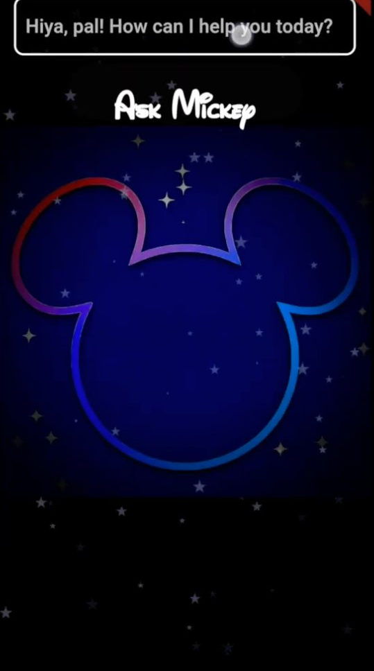
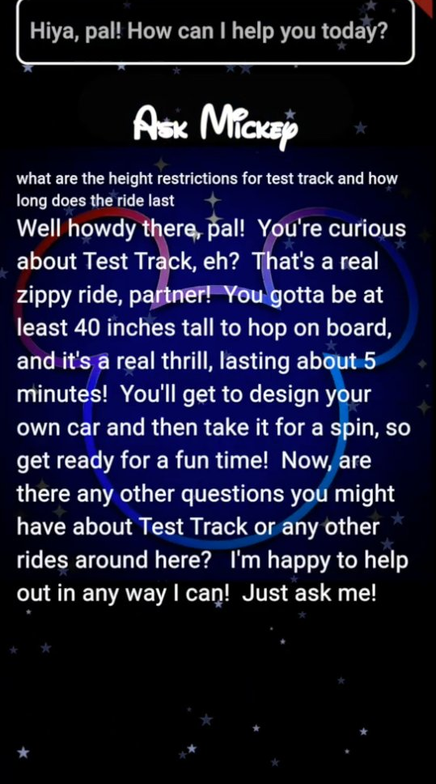
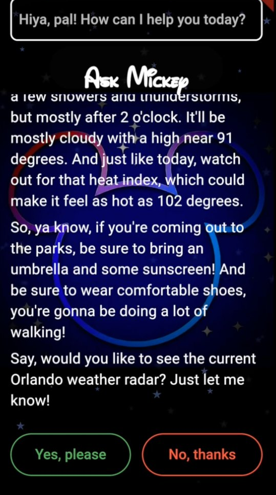
Structured retrieval at scale
Dense, multi-result queries handled completely — every option, location, and price — and a hand-off to the official source when that's the right answer.
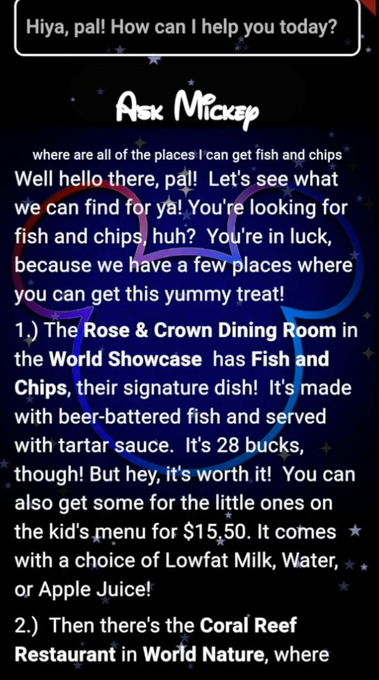
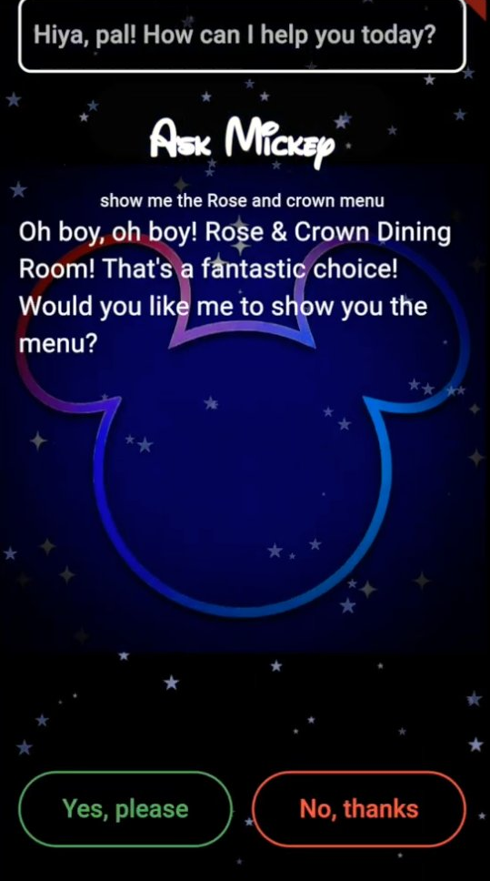
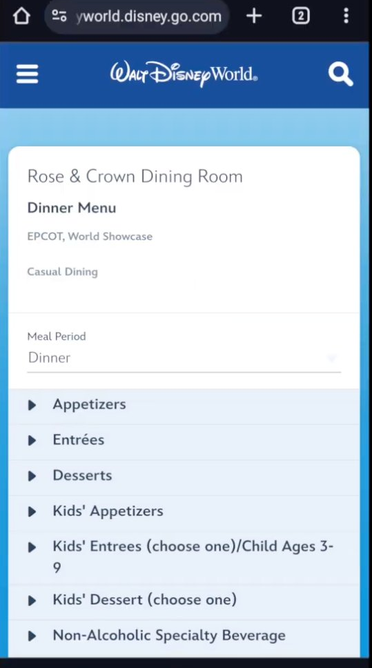
Geolocation routing from where you're standing
The app resolves the destination from a plain-language question, reads the guest's current location, and launches a turn-by-turn walking route — delegating the map to the tool that does mapping best.
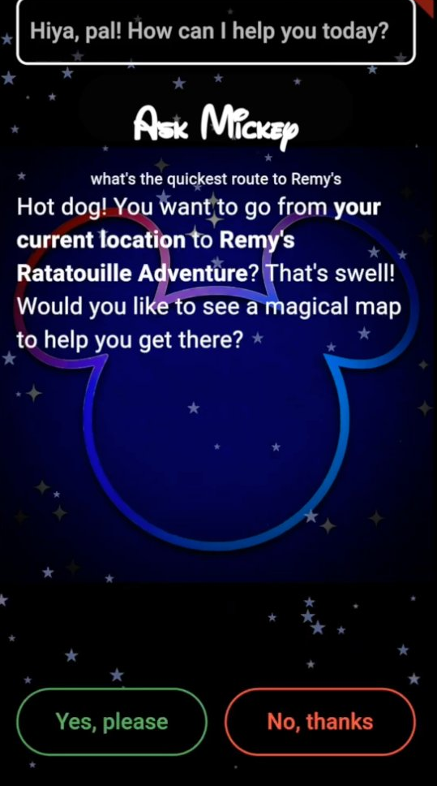
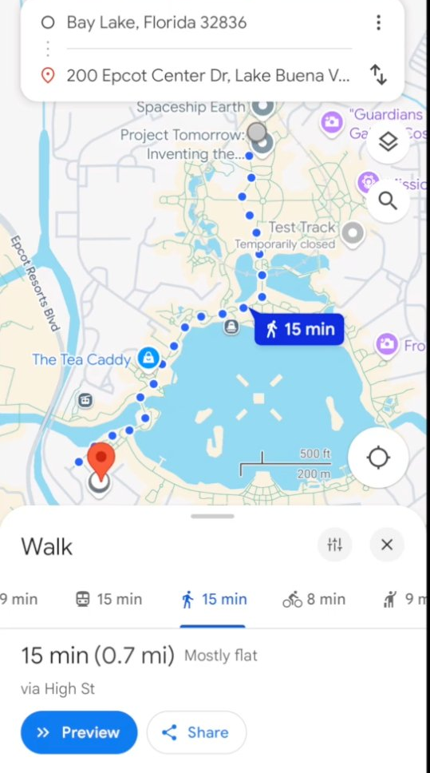
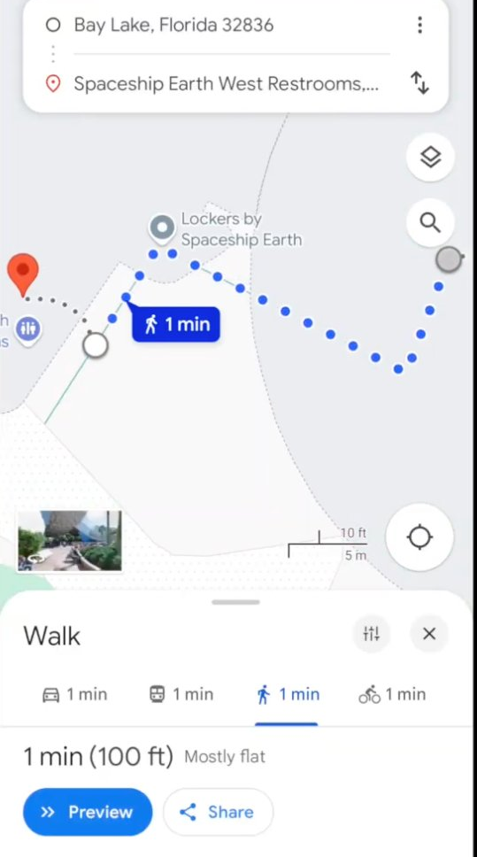
The touches that make it a product
Details that show the system was designed for real guests on a real park day — not assembled as a tech demo.
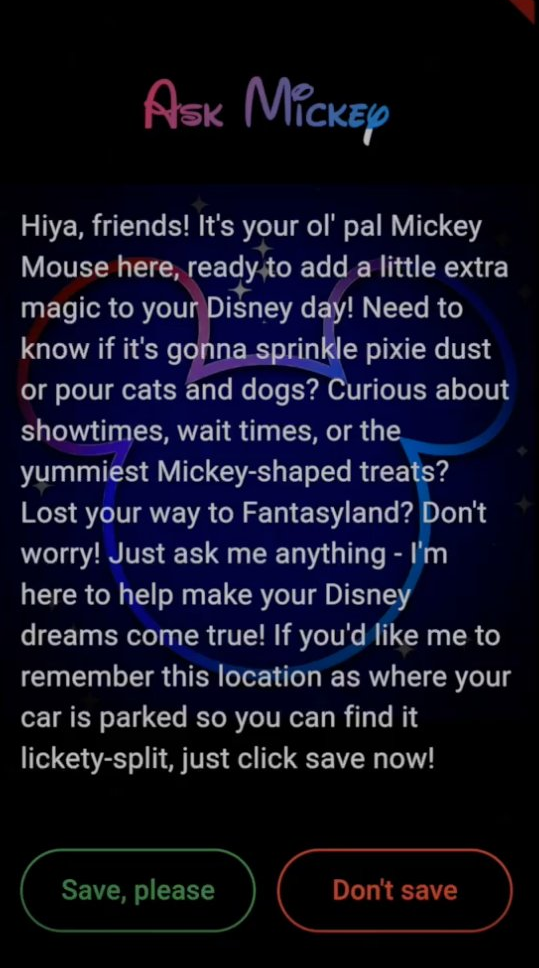
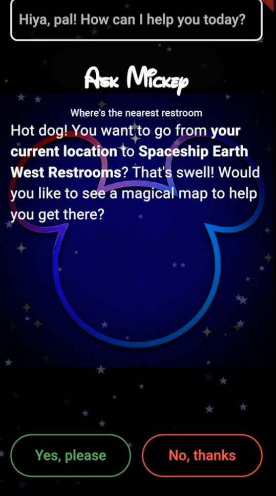
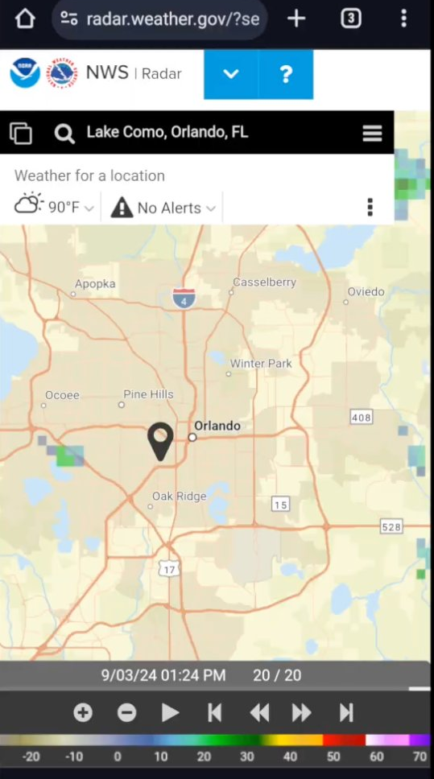
Workflow
Design by hand. Implementation with AI.
AskMickey predates the structured AI-assisted workflow I use now. The architecture above — the routing pattern, the handler split, the safety paths, the data-source design — was worked out before any code was written. AI tooling entered once the specification was stable, assisting with a portion of the implementation: scaffolding Flutter widgets, handler boilerplate, tests against the spec.
That sequence is the distinction I'd draw: concept, architecture, and specification by hand; a portion of the implementation accelerated with AI after the design is set. It's a different workflow than the rapid-MVP-with-heavy-AI approach I took on the weather project later, and both have their place — but for a system with non-trivial routing logic, designing first and implementing second produces a system you can defend in detail.
Client
- Flutter
- Dart
- iOS · Android · Web · Desktop
Routing
- Classify-then-route dispatcher
- Deterministic gating
- Per-handler prompt scaffolding
LLM
- Google Gemini
- Handler-specific contexts
Data sources
- Live queue / wait times
- Dining menus · weather
- Maps · geolocation
Artifacts